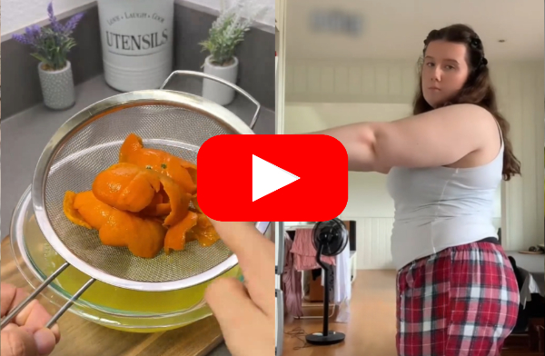

>> Make sure your sound is turned on. Please wait up to 10 seconds for the video to load <<
Watch The Video Now >>A clinical nutritionist just discovered that soaking THIS specific orange peel in hot water each morning can ERASE stubborn belly fat...
New studies from Harvard and Mayo Clinic show this "30-second routine" can even force your metabolism to burn fat 24/7...
Making you lose up to 76 pounds without changing your diet...
One 54 year-old mother lost 41 pounds in just 12 weeks using this simple morning ritual.
Many people have tried this and have been amazed by the results.
So tap the button below to watch the free video and learn this easy routine that you can begin today at home.